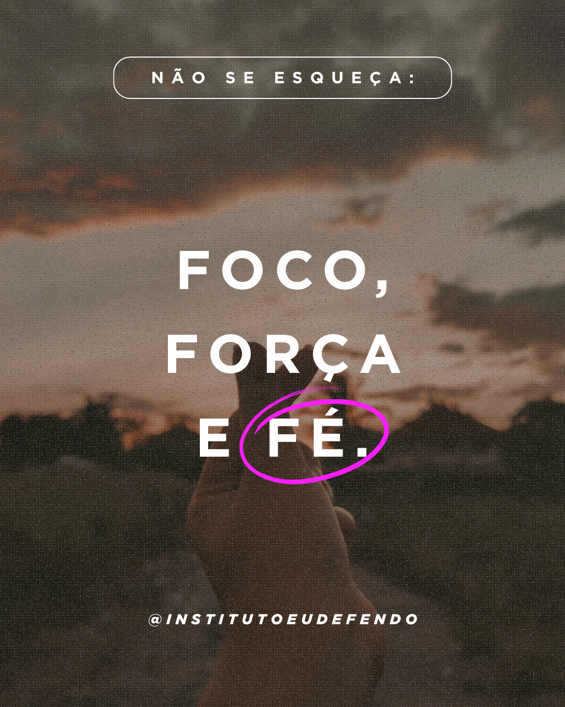

Acolhimento
Centro de Atendimento à Mulher
Escuta sigilosa e apoio multidisciplinar para mulheres em situação de vulnerabilidade social e econômica.
Instituto Eu Defendo · Rio de Janeiro
Uma rede de acolhimento, fé e transformação que cuida de pessoas e fortalece comunidades.
[ NOSSO PROPÓSITO ]
Nascemos nas ruas do Rio de Janeiro e crescemos como uma rede multidisciplinar de assistência, escuta e ação.
Conheça nossa trajetória ↗[ COMO AGIMOS ]
Três frentes, um mesmo compromisso: transformar acolhimento em autonomia e fé em ação.
Acolhimento
Escuta sigilosa e apoio multidisciplinar para mulheres em situação de vulnerabilidade social e econômica.
Comunidade
Um espaço de encontro, formação e unidade que reúne iniciativas católicas no coração do Rio.
Celebração
Música, oração e formação em uma grande celebração que entrou para o calendário oficial da Arquidiocese do Rio.
[ HISTÓRIA VIVA ]
Da panfletagem em bairros do Rio à construção de uma rede de apoio psicológico, social e espiritual. A cada encontro, entendemos melhor que acolher é enxergar a história inteira.
Caminhe com a gente ↗
Eu defendo o acolhimento.
Eu defendo a dignidade.
E você, defende o quê?
[ VAMOS CONVERSAR ]
Quer apoiar, ser voluntário ou conhecer melhor o nosso trabalho? Escreva para a gente.